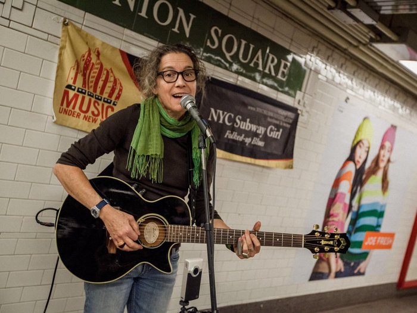

Subway Roar
The 14th Street–Union Square station hums like a living instrument. It’s not just the trains— it’s the rhythm of footsteps, the shuffle of commuters, the metallic pulse of the city itself. The roar of the incoming train echoes off the tiled walls, followed by the sudden hush that falls when the doors slide open. The smell of metal and dust hangs in the air, but somewhere in that noise, music blooms.
Near the downtown platform, a saxophonist stands beneath the fluorescent lights. His case is open, lined with a few crumpled dollar bills. The first note he plays cuts through the chaos— warm, soulful, trembling at the edges. It bends around the column, finds its way between conversations, and lingers above the heads of people waiting for the next train. Some listen. Most don’t. But for a few moments, the space changes shape. The usual impatience softens into something almost tender.
A woman in a long coat taps her foot. A man in a suit lowers his phone to look up. Even the pigeons perched near the tracks seem to pause. The music rises, fills the station, then fades as another train arrives, swallowing the melody in its thunder. When it’s gone, there’s a small silence, the kind that makes you suddenly aware of your own breathing. The musician takes a breath, adjusts his reed, and begins again.
Union Square is one of those places where you can hear the city think—voices, trains, announcements, laughter, and above it all, the persistence of a song that refuses to be lost. It’s a reminder that in New York, even underground, there is always someone creating, always someone playing against the noise. 